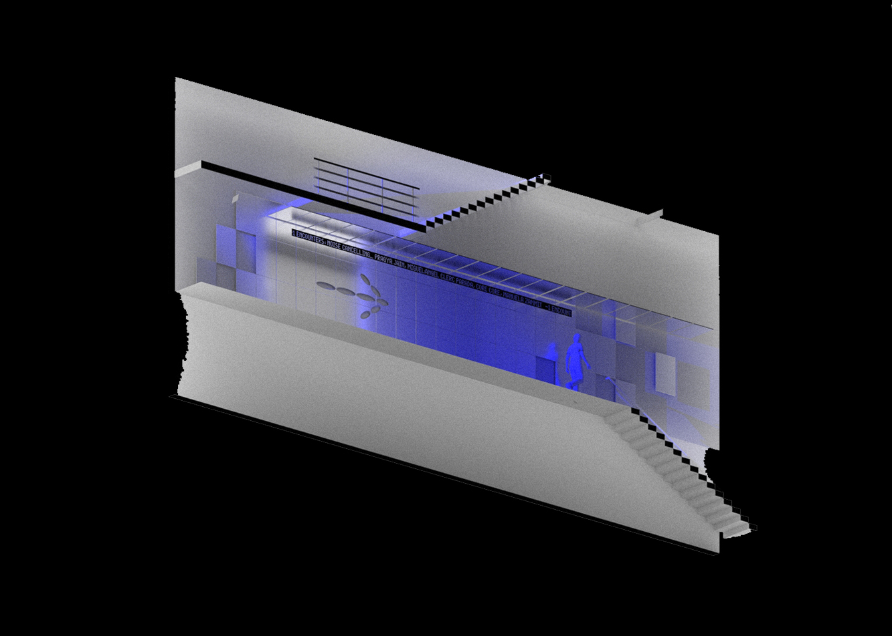
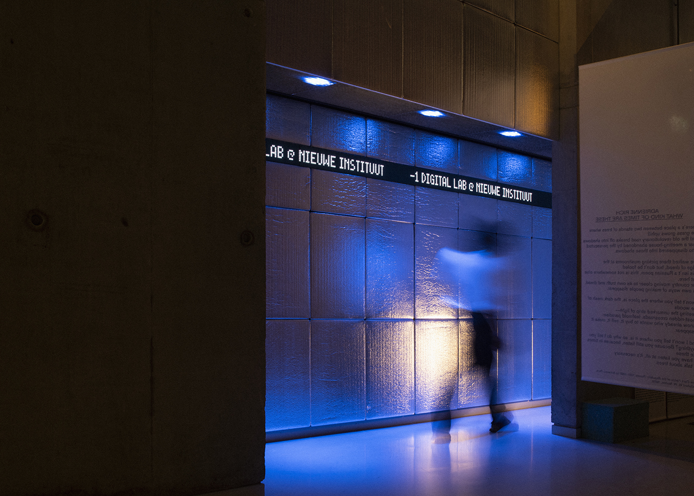
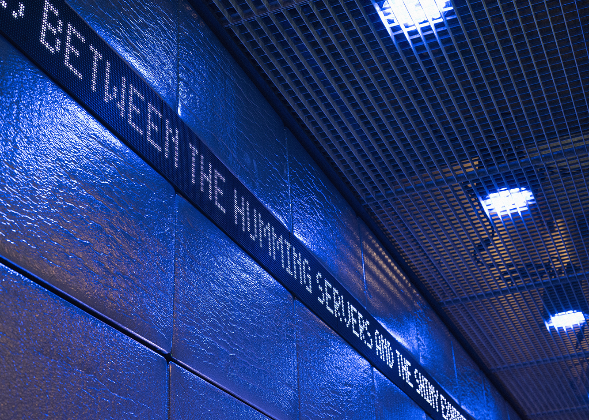
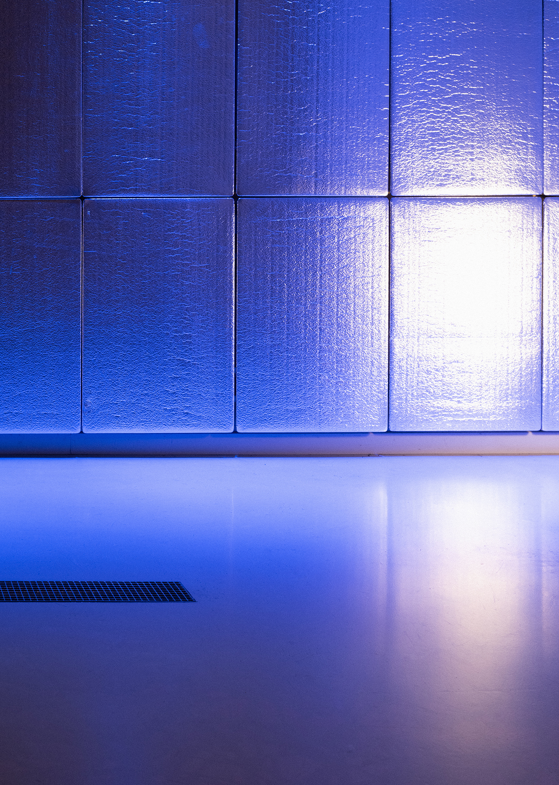
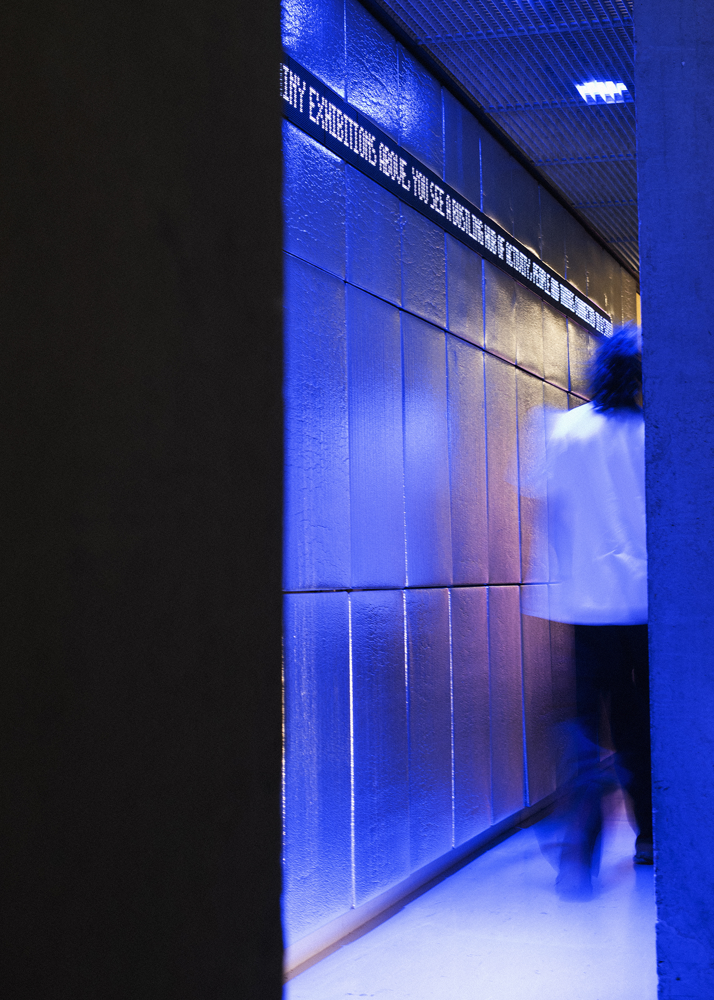

Minus One – Entrance
Situated in the basement of the Nieuwe Instituut, Minus One is a hybrid space for digital culture where makers, researchers, and audiences meet, test ideas, and develop ongoing projects. Shifting between exhibition, event, and workshop space, it functions as a continuously evolving environment shaped by its curatorial programme and seasons of artists in residence. Originally designed in 2023, I have continued working with the team at the Nieuwe Instituut as the Interior Architect for the space. Following the redesign of Gallery 1 by Oliver Goethals, the entrance to the basement-level space was rethought to
better serve the new gallery layout and reflect the space’s evolving functions. The intervention introduces a new threshold using reflective upholstered wall
panels and a dropped steel ceiling grate with integrated blue LED lighting, drawing visitors down the narrow corridor towards the space below.
A central element of the redesign is a programmable LED ticker integrated into the panels. This functions as both signage and a publishing platform for
residents, allowing content to be continuously updated and displayed within the architecture itself. Depending on its use, the entrance can shift between a legible institutional interface and a more open, experimental platform.
Photography: Sophie Allerding
Curator and Producer: Thomas Tawanda Orbon
Design: Jack Bardwell
Build: Bouwko Landstra, Rob Gijsbers and team




